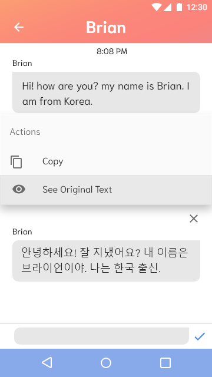
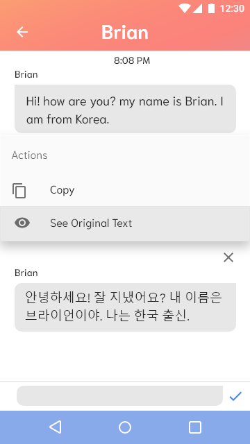

Background
At the Dubhacks 2018 Hackathon, we had to design anything that is for social good, so I created Piaro. Piaro is a mobile messaging application that automatically translates messages allowing people who speak different languages to communicate with one another. Piaro allows:
- people from different parts of the world to connect like pen pals
- people staying in a foreign place (such as refugees and immigrants) to communicate with their new community
- travelers who are curious to find out information directly from a citizen
Design Process
Ideation
Since this project was created at the Dubhacks Hackathon, it was one of many ideas that my team brainstormed. As I said above, my inspiration for this idea came from my knowledge of refugees in America from the Project ARTogether internship. For refugees in San Francisco, it is hard to connect to those around them because of a language barrier. I, myself have problems communicating with my grandparents as well because they only speak Vietnamese and not English. This was a social issue that I felt needed to be tackled and could be tackled with the time constraints of a hackathon.
Designing
Because of the time constraints, I was unable to do user research on this project. I went right into designing the information architecture and wireframes for the idea. However, as I was working, I was exploring paths about how to make the interface with my team and making sure that people of all areas could easily navigate it. I tried as much as possible to put myself in the shoes of a potential user while designing. Since it was all on the fly, I kept having to add more wireframes. Initially, I was only going for around 10 basic screens, but I was constantly adding more because of possible user interactions I saw. I ended up with 44 wireframes that detail all the possible interactions in our application.
Features
While designing the wireframes, I kept in mind three key features that I wanted to implement. I wanted to make sure the translation was instant, users would have recommened friends, and that users could easily search and add new friends. These three features would ensure that Piaro could work for those who need pen pals, help talking to their neighbors, and information from a certain area. Below are the descriptions and functionality of these features.
Instant Translation
Users have the options of setting their default language that all their incoming messages will be translated to. No manual translations needed! However, users can view the original text by tapping and holding on the message if they would like.
 

Friends
Users will be matched to recommended friends on their home feed. These friends are found based on the information from the user quiz (which is retakeable) and user profiles. These new pals will always have something in common with you!

Search
Users can easily search for other users, using a phone number, 4 digit ID number, or city. This way, if you want to talk to someone you already know with a language barrier, you can with Piaro. For travelers who want to know the best places to go in a certain city, Piaro can definitely help.
User Testing
At the Dubhacks competition, despite not being about to do user research, I was able to do user testing with mentors from technology companies. I learned a lot about the nuances I needed to consider including the translation aspects of our application. I was able to improve my designs to make it more usable for the global users, by incorporating pictures and clear icons.
Software Development
While I focused on the designs of Piaro, my team members were working on the back end of the project. They were figuring out how to utilize the Google Translation API and connect it to a messaging application. During their work, I was assisting them by clarifying the specific features and functionality of Piaro.